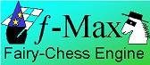

|  |
Fairy-Max is an AI, also called 'engine', for playing Chess variants. It is free open-source software, authored by H.G. Muller. It was created for the purpose of empirically evaluating fairy pieces, by allowing those to participate amongst orthodox Chess pieces in Chess games aimed at checkmating an opponent royal piece. It searches ahead like the FIDE-Chess engine from which it was derived (the World's smallest Chess program, micro-Max) by generating moves and trying them out on the internal board. To know how each piece type moves, micro-Max uses tables with step vectors, and it knows which pieces are leapers and which are sliders. In Fairy-Max, the contents of these tables is not fixed, but is loaded from a configuration file 'fmax.ini' at the start of each game. This allows the user to change the way pieces move (or add pieces of his own design) without changing the program, by altering the contents of the fmax.ini file. Fmax.ini is a normal text file and thus can be modified with any text editor (e.g. Notepad). |
Fairy-Max is only an AI. It does not provide any graphics to display the position of the game it is playing, but only relays the moves as text. It is primarily designed to be run as an engine inside the WinBoard_F GUI, and it communicates with this GUI in WinBoard protocol. Although there are several other GUIs that support WinBoard protocol, they will in general not offer as much variant support as WinBoard_F. Most GUIs only support normal Chess. ChessGUI by Matthias Gemuh also supports 10x8 Capablanca variants. Note that there are also many other WinBoard-compatible engines for playing variants that can be played under WinBoard_F. Some even play variants that Fairy-Max could never implement (e.g. Xiangqi or Crazyhouse).
|
Fairy-Max can be downloaded from here as a ZIP archive, containing the engine executable, the fmax.ini (which contains its own format description), and the engine source code, all grouped inside a folder. To install it, just extract this folder to a suitable place on your hard disk. Recommended is to put this folder inside the one where you installed WinBoard_F. WinBoard_F will then be able to find Fairy-Max without the need for changing the winboard.ini file (which contains the list of pre-defined engines that you can select in the startup dialog box without typing). The default memory usage of Fairy-Max is 96MB, almost all used for its hash table. If this does not comfortably fit in memory together with the engine process of the opponent (if there is a computer opponent), Fairy-Max will not run properly, and you would have to reduce the hash size. To do this, the engine name you type in the WinBoard startup dialog, or the one predefined in the winboard.ini file, should be accompanied by a numeric option argument indicating the hash-table size. A value of 23 correspond to the default size of 96MB, 22 to 48MB, 21 to 24MB, etc. To make WinBoard understand this argument is part of the engine startup command, the engine name plus argument should be enclosed in double quotes, like "Fairy-Max\fmax.exe 21". |
Table 1: Variants pre-defined in the supplied fmax.ini
|
The piece descriptions in the fmax.ini file are grouped into variants, so that setting the engine to a certain variant (from the User Interface), will load the group of piece descriptions for that variant. The Fairy-Max download comes with an fmax.ini that predefines several variants (FIDE Chess, Capablanca Chess, Shatranj, Courier, Knightmate, Cylinder Chess), which can serve as an example for those that want to implement their own variants. In addition, the fmax.ini file contains definitions of the most common fairy pieces not participating in the predefined variants, so that the user can draw on them when composing his own variants. Although Fairy-Max supports merely 15 different piece types, this is only a limitation to the number of different piece types that can participate simultaneously in a single game. In a game of another variant, all 15 pieces could move completely differently.
The board size for each variant is also defined in the fmax.ini file, and is currently limited to 12x8. (Expansion of the number of ranks is on the to-do list.) The default opening position is also defined in there, but can be overruled by loading a position through the User Interface.
Table 2: attributes that can be combined to define a move type
|
Apart from Pawns, orthodox Chess pieces only come in two different types: leapers and sliders. Leapers can only do one step of a given type, while sliders can repeat their elementary step indefinitely, as long as they do not encounter an obstruction (piece or board edge). If the obstruction is an enemy piece, it can be captured, (both by leapers and sliders), but the move cannot continue after that even for a slider. As not all fairy pieces fall in the slider or leaper category, Fairy-Max implements two additional move types: hoppers and alternators. Hoppers are sliders that can jump over the first obstruction in their path, and continue from there, with possibly a different type of move. The best known examples are the Cannon (Pao) from Chinese Chess, and the Grasshopper. The Pao changes its move type from 'non-capture-only' to 'capture-only' on hopping. The Grasshopper changes it from 'none' to 'both' (capture and non-capture), and in addition from slider to leaper. (It is only allowed to do one step after the hop, in contrast to the Pao, which remains a slider after hopping.) |
Alternators are pieces that do not need to hop over anything to change their move type, but do so spontaneously after every step they make. This can be a change in step direction, to provide bend trajectories, but also in capture rights. E.g. a Xiangqi Elephant makes 2 diagonal steps in the same direction, on the first step it is not allowed to do anything (capture or non-capture) but continue, (if the square is empty, of course), on the second step it can both capture and non-capture (but is not allowed to continue any further, even if the square was empty). The Xiangqi Horse is similar, but also changes direction between the first and second step.
The Crooked Bishop is an example of a slider that changes direction on every step. This means both its primary and secondary step allow slider-like continuation. After the second step it switches back to its first, and continues alternating on every subsequent step. For simplicity, Fairy-Max treats every slider that is not a hopper as an alternator. In cases where this is not desired (e.g. for the Rook), it simply 'alternates' between two identical steps.
To provide flexibility in implementation of fairy pieces, the discription of the move type has to be given for each direction separately, rather than for the piece as a whole. This to allow mixed sliders/leapers, such as the Archbishop, which combines the Knight (leaper) and Bishop (slider) moves. For implementation of hoppers and alternators, the move description (direction and type) has to be given twice (primary and secondary move descriptor).
Fairy-Max makes no assumptions to the symmetry of the piece, meaning that all directions in which the piece moves have to be specified explicitly. E.g. for a Rook we have to list 4 moves, for a Knight 8. However annoying this sometimes might be, this is necessary for allowing implementation of asymmetric pieces such as the Crab or the Shogi Generals. Unfortunately, Fairy-Max is not smart enough yet to realize that the different sides play in opposite direction. Thus asymmetric pieces (such as Pawns) have to be implemented as different piece types for white and black. (E.g. what is a Crab for white, will be a Barc for black, and vice versa.) The following pieces have predefined descriptions in fmax.ini, ready for copying to your own variants.
| SIMPLE LEAPERS | COMPOUND LEAPERS | LEAPER-SLIDER COMPOUND | SLIDERS | LAME LEAPERS | CYLINDER PIECES |
| Ferz | King / Commoner | Archbishop | Bishop | Elephant (Xiangqi) | Cylinder Bishop |
| Wazir | Bison | Chancellor / Marshall | Rook | Horse (Xiangqi) | Cylinder Rook |
| Knight | Wildebeest | Caliph | Nightrider | SEPARATE CAPTURE | Cylinder Knight |
| Dabbaba | Carpenter | Canvasser | Queen | FIDE Pawn | Cylinder Queen |
| Elephant (Alfil) | Kangaroo | Amazon | Crooked Bishop | Shatranj Pawn | Cylinder Pawn |
| Camel | High Priestess | HOPPERS | Berolina Pawn | ||
| Zebra | Minister | Grasshopper | Quing | ||
| Crab / Barc | Cannon (Xiangqi) | Keen |
This section gives an indication of how the Chess variants are defined
in the fmax.ini file.
After a line "Game:
For each piece, we have to give the letter by which it is represented when feeding a position to the engine, and the value the engine should attach to it in play. (So beware, Fairy-Max is not smart enough to figure this out by itself. If you tell it an immensely powerful piece like a Queen is only worth half a Pawn, it will happily trade it for one!) Then follows on the same line a list of move descriptors, one for each direction the piece moves in. A move description consists of an elementary board step, and a number that specifies the move attributes, i.e. what the piece is allowed to do in this direction (if it can capture and/or non-capture, if it is leaper or slider, if it can hop over an obstacle or not, if it respects the board edges or wraps around.) The exact way the step vectors and attributes are encoded is specified in comment lines contained in the fmax.ini, as it might still be subject to change in future versions.
The first two pieces specified are by definition the white and black Pawns. That means that Fairy-Max will let them promote if they reach the last rank. Fairy-Max always promotes to 'Queen', i.e. the 7th piece specified, however that moves. The third piece is the only one that can possibly castle with corner 'Rooks', i.e. the 6th piece defined. Although it is possible to make another piece than the 3rd royal, (indicated by giving it a negative value), that piece then couldn't castle.
There are many things that Fairy-Max cannot do; it was never meant to be a general game-playing system like Zillions of Games. Amongst the impossibilities are piece drops, (as in Crazyhouse or Shogi), and pieces for which the moves are dependent on their location on the board (as in Xiangqi). For some pieces the move is simply too complicated to fit within the Fairy-Max move-type classification system (e.g. Rose, Griffon).
Positional evaluation in Fairy-Max is fairly primitive: a piece either is drawn towards the center, or not. If you want a piece to be drawn to the center, you should indicate it by a lower-case letter. Pawns do get a large positional bonus when they reach 6th or 7th rank, of 64 and 128 units ('centiPawn' in FIDE Chess), respectively. This assumes that the piece to which the Pawns will promote is of decisive value, so the opponent will have to sacrifice a piece to stop the promotion. For Shatranj and Courier Chess,vwhere Pawns promote to the worthless Ferz, thi would lead to nonsensible play. To cure that, Fairy-Max divides these bonuses by 8 if the promotion piece is worth less than 200 centiPawn. The strategy of Fairy-Max is mostly tailored for normal Chess, with normal Pawns that make decisive promotions, so it might never become a really good Shatranj or Courier player.
The first three moves of each game that Fairy-Max plays are chosen randomly from those that do not immediately give away material. This causes Fairy-Max to vary its play despite the absense of an opening book. The shadow side of this is that the initial moves might be no good positionally at all.
Fairy-Max runs on a PC under any Windows operating system. The memory demand is determined by the size of its hash table, whic by default is 96M. It would still run with a smaller hash table, but the larger the hash table, the better its play. Running with a hash table smaller than 6MB is not recommended.